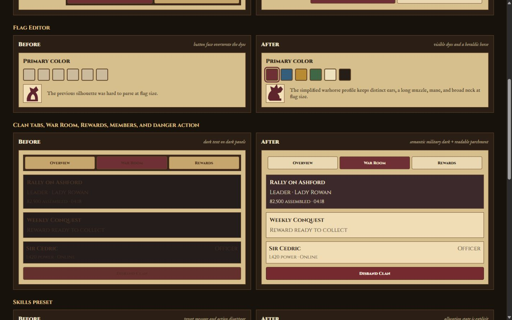
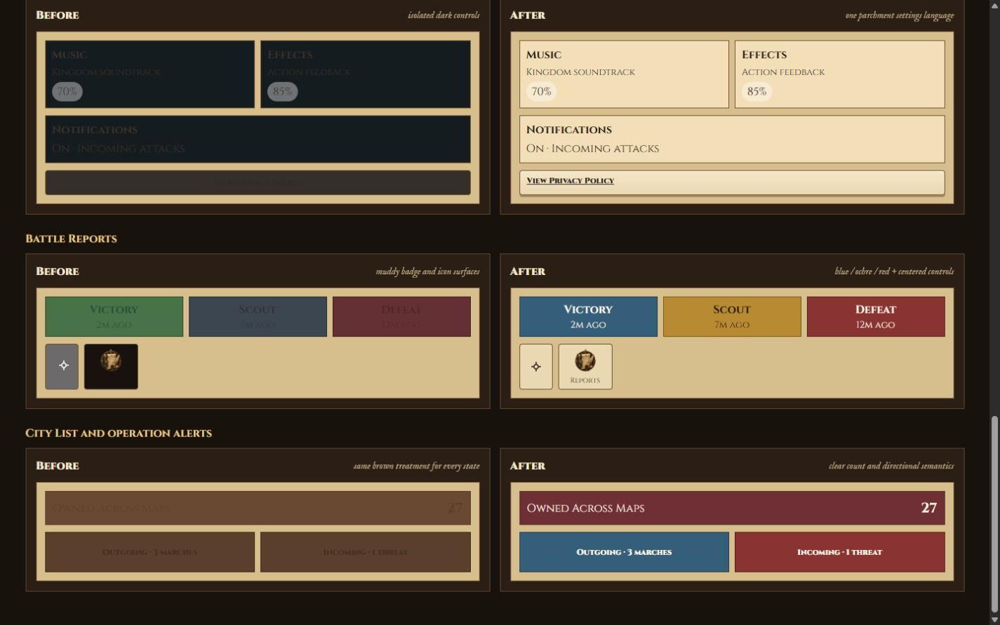
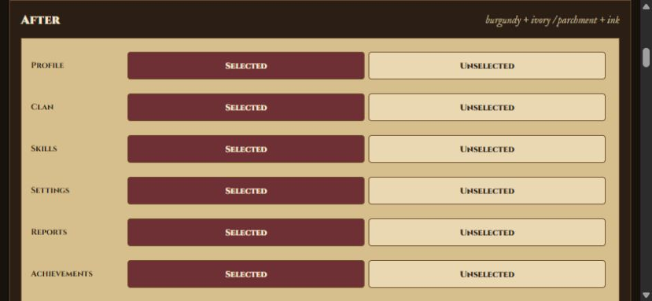

UI Contrast Correction
Repeatable old/new fixture for Crownlands presentation states. The “after” column uses the production correction tokens.
Global tab system
Representative selected and unselected states across every player-facing tab family.
Flag Editor
Primary color
The previous silhouette was hard to parse at flag size.
Primary color
The simplified warhorse profile keeps distinct ears, a long muzzle, mane, and broad neck at flag size.
Clan tabs, War Room, Rewards, Members, and danger action
Rally on AshfordLeader · Lady Rowan82,500 assembled · 04:18
Weekly ConquestReward ready to collect
Sir CedricOfficer1,420 power · Online
Rally on AshfordLeader · Lady Rowan82,500 assembled · 04:18
Weekly ConquestReward ready to collect
Sir CedricOfficer1,420 power · Online
Skills preset
42 points assignedApplying leaves 3 earned points unspent.
42 points assignedApplying leaves 3 earned points unspent.
Settings
MusicKingdom soundtrack
EffectsAction feedback
NotificationsOn · Incoming attacks
Battle Reports
Victory2m ago
Scout7m ago
Defeat12m ago
Victory2m ago
Scout7m ago
Defeat12m ago
City List and operation alerts
Owned Across Maps27
Outgoing · 3 marches
Incoming · 1 threat
Owned Across Maps27
Outgoing · 3 marches
Incoming · 1 threat
Browser captures
Captured from this fixture in the Codex in-app Chromium browser at the required responsive sizes.


